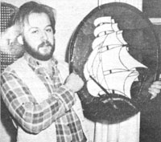

If you now operate, or have ever operated, a successful home business that was inspired by an article you read in MOTHER, tell us (in about 500 words) when and where-and with how much "seed money" you started your venture. Because if your story can be fitted into an upcoming installment of BOOTSTRAP BUSINESSES, you'll receive [1] the warm satisfaction of knowing that you helped someone else find the happiness you enjoy and [2] a free two-year new or renewal subscription to THE Mother Earth News.
When my son Randy read Jo Frohbieter Mueller's article, "Stained Glass" (MOTHER NO. 48, page 74), he rapidly developed a keen interest in the art form. Beginning by traveling to a studio 25 miles away for private lessons, he brought home books, equipment, and sheets of stained glass His initial investment was $70, of which $50 went for tools and $20 for glass.
Randy's first effort was a crude but identifiable butterfly given as a Mother's Day gift. Later, his mom's birthday was brightened by a gaily colored glass pattern which now hangs in the laving room window.
Our son was learning by trial and error-and actually breaking more glass than he used-when something happened that changed his hobby into a career. He was invited to teach the art at the local community college. Well, Randy sat down and read all the books he had borrowed but laid aside in his eagerness to get to work. Then he went on to consume every volume on the subject in the public library. Finally, he traveled to a large supply house where experts in the craft gave him additional help and information. After that trip, his glass creations were made more rapidly and became much larger and more beautiful. And they began selling!
Now, Randy's been established in his own studio, "Glass of Past", for nearly a year . . . where he creates, sells, and teaches the art he loves. His opening inventory of $2,500 has already increased to $7,000, and he has hired an assistant and has rented space to two other craftspersons. Randy charges $30 to $50 per square foot for his finished pieces and has recently completed an order for $4,000 worth of windows.
You can contact our son, the glass artist, at this address: Randy Plowe Glass of Past, Dept. TMEN, 221 South James, Ludington, Michigan 49431.
Ron Plowe
Ludington, Mich.
After two very poor olive harvests cut into the spending money we'd been able to earn from our little farm over here in Greece, I was happy to read (in MOTHER NO. 62, on page 24) Carol Clivio's article, "Fashions From Old Ties" which describes and illustrates the attractive items she creates out of the castoff pieces of silk. With Carol's ideas in mind, I was able to hatch my own little business.
My available horde of scraps consisted not of silk ties, but of wool vests and pullovers that have been too severely moth-chewed to be of any conventional use. 1 collect the garments, dozens at a time, by posting signs in bakeries, where the Northern Grecian islanders see them and respond willingly. Then I unravel the sweaters and remake the yarn into caps, waistcoats, and jackets in the same styles as those worn in ancient Greece! I also add a little extra touch, when preparing each of these newtold items for sale, by including a hand-calligraphed description of the article ... in French, German, English, and Greek.
So far I've had to make no investment in my business (other than four to five hours a week of my time). The sweaters I unravel and knit again are free, and I already owned all the knitting needles and crochet hooks I could possibly use when 1 began this venture. There isn't even any out-of-pocket transportation cost: My husband and I load the garments aboard the handmade sailboat we've had for 13 years and let the wind carry us to market . . . or, to visit neighboring villages on our own island, I simply ride my bike.
The profit isn't great-about $150 a monthbut there's no overhead and what we do earn makes it possible for us to afford the books and gadgets we read about in THE MOTHER EARTH NEWS"!
Gail Jacobson
Volos, Greece
Maine winters can be bitter cold, but-as a born DownEaster-I wouldn't live anywhere else! However, to stay here and survive economically, a homesteader has to be either rather wealthy or extremely resourceful. (My family and I have always been the latter of the two!)
During the winter we plan for busier seasons . . . making lists of what to plant, repair, replace, or build. And we search and scheme for ways to make an extra dollar. Well, while "sharpening our brains" this past year-having ingested "Wood-Burner Restoration" in MOTHER NO. 59, page 25, which set us thinking about stove accessories-Bill and I ran across an article on woodbox designs . . . and we knew we'd found the idea we were after.
That's how we started building firewood storage chests. Bill handcrafts the attractive fuel holders, and I decorate them with vegetable dyes and stains.
Our original investment was approximately $58: $30 for wood, $8.00 for screws and hardware, and about $20 in advertising and marketing costs. Now, our creations sell for $100+, depending on the model and the shipping cost . . and our earnings range between $700 and $1,400 a week. We're really quite astonished!
If you would like further information, please write.
Bill Eaton & Helen Rogers
Blue Hill Box Company
Dept. TMEN
Rt.1, Box 224
Orrington, Maine 04474
After reading "How to Make Tied Comforters and Quilts" in MOTHER NO. 31 (page 62), my wife got bitten by the quilting bug, and our lives haven't been the same since. She started buy ing craft magazines and began quilting by squares. As we knew it would, the day arrived when she had enough units to make a complete quilt . . . and that meant we had to obtain a quilting frame. The device that was featured in MOTHER's article required at least two people to manipulate it, though, so we kept looking until we found a lightweight frame that could be handled by a single person.
That purchase got us started in not one but two businesses. Since my wife had been asked to teach a course in quilting for a local high school's community education department, we thought it made sense to manufacture and sell lap frames to the students . . . along with kits to make their first squares. Some of the folks in the class just made pillows or wall hangings, but others went on to complete fullsized quilt tops, and they needed-you guessed it-quilting frames. So supplying those pieces of equipment became our second business.
We sold, in all, ten lap frames and 18 quilting frames. Our expenses totaled $1,212.63 for lumber, nuts and bolts, ratchets and pawls, shipping boxes, and printing. Our total profit, including my wife's salary for teaching the class, came to $1,661.88 in a little over a year of parttime work.
And guess what, folks? We plan to do it again ... with a little difference. Next time we're going to sell ratchets, pawls, and plans for quilting frames, while continuing to market our fully assembled lap frames. So if you're a little bit handy and interested in building a quality quilting frame, just let me know. [EDITOR'S NOTE: Quilting enthusiasts will enjoy the article on page 86.]
T.L. "Les" Bourland
Dept. TMEN
305 S. Seguin
Converse, Tex. 78109
5121658-2892
About a year and a half ago-after undergoing surgery-I was advised by my doctor to take it easy for several months. As a result, I-was forced to find a way to keep food on the table (and to keep myself occupied) that required less physical exertion than did my "old" equipment overhaul job. Remembering all the successful Bootstrap Businesses discussed in THE MOTHER EARTH NEWS', I started thumbing through my collection of back issues. James A. Lee's letter in MOTHER NO. 52 (page 130) set me to wondering what kinds of skills and tools I already had that could help me bring in some income.
I had worked as a locksmith in my younger years, and that seemed to me to be a good occupation to go back to . . . but in a less structured way than before. The local smith enthusiastically accepted my offer to fit new keys to closed padlocks on a contract basis: He was too busy to get around to that particular task himself, and he had hundreds of locks just waiting for my attention.
This good man also agreed to provide pickup and delivery to my house, supply me with key blanks, and pay me-in cash-on each visit. Therefore, my "investment" consisted of my MOTHER subscription and my free time .. . and the resulting income was better than what I had been making at my commercial job before the operation! What's more, the locksmithing enterprise had side benefits that were especially valuable to a convalescent. I was able to choose the hours I worked, could take oft and sit in the sun if I wished to, and didn't have to ask for days off if I felt like taking a short trip.
Now, I'm back at a regular full-time job-In automation but I still do part-time "ghost" key lmpressioning for the local locksmith ... and that sideline occupation, which takes only five or six hours a week, increased my net income last year by more than 10%. In addition, I'm write Ing a paper, about the philosophy of making keys by the impression method, that I hope to have accepted by one of the locksmithing publications in the States!
Samuel Shimshoni
Hadera, Israel
|
 |
|
|